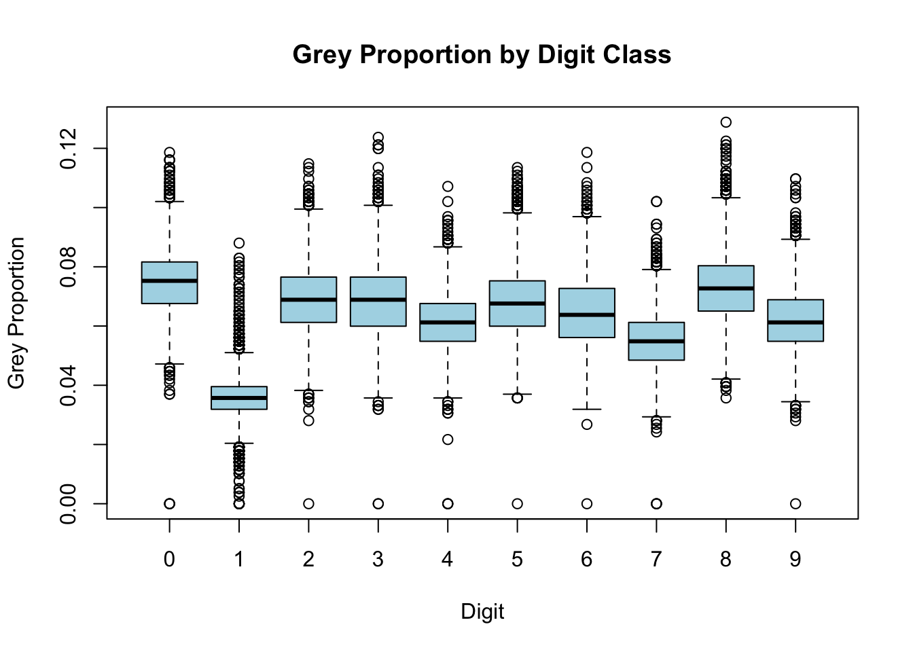

You are not allowed to load any package or use for-loop. For exercises 1 and 3-6 you only get to write one line of code for the solution.
For better preparation for midterm, we recommend not using chatGPT for this homework.
Create a 100 by 10 matrix of randomly generated standard normal numbers. Put the result in x. Show the subset of x defined by the first 5 rows and the first 4 columns.
set.seed(2025)### YOUR ANSWER HERE(x <-matrix(rnorm(100*10), 100, 10))[1:5, 1:4]
Apply the three R functions that give you the dimension of x, the number of rows of x, and the number of columns of x, respectively. Print the responses.
### YOUR ANSWER HEREdim(x)
[1] 100 10
nrow(x)
[1] 100
ncol(x)
[1] 10
Generate matrix y obtained from adding the scalar 1 to row 1, the scalar 2 to row 2, and so on, to the matrix x. Show the subset of y defined by the first 5 rows and the first 4 columns.
### YOUR ANSWER HERE(y <- x +matrix(1:100, nrow=100, ncol=10, byrow=FALSE))[1:5, 1:4]
Generate matrix z obtained from adding the scalar 2 to column 1, the scalar 4 to column 2, and so on, to the matrix y. Hint: Use sweep with FUN = "+". Show the subset of z defined by the first 5 rows and the first 4 columns.
### YOUR ANSWER HERE(z <-sweep(y, 2, 2* (1:10), FUN ="+"))[1:5, 1:4]
Use matrix multiplication to compute the average of each column of z and store in a single row matrix. Hint define a \(1\times n\) matrix \((1/n, \dots, 1/n)\) with \(n\) the nrow(z). Show the first 10 elements
### YOUR ANSWER HEREhead(matrix(1/nrow(z), 1, nrow(z)) %*% z, 10)
Use matrix multiplication and other matrix / vector operations to compute the standard deviation of each column of z. Do not use sweep or apply. Print the results. For this exercise, you must only use the following operations: t, -, %*%, *, /, and as.vector
### YOUR ANSWER HEREcol_means <-matrix(1/nrow(z), 1, nrow(z)) %*% z mean_matrix <-matrix(1, nrow(z), 1) %*% col_means squared_diff <- (z - mean_matrix)^2col_variances <-t(squared_diff) %*%matrix(1/(nrow(z)-1), nrow(z), 1)col_std_dev <-sqrt(as.vector(col_variances))print(col_std_dev)
For each digit in the MNIST training data, compute and print the overall proportion of pixels that are in a grey area, defined as values between 50 and 205, inclusive. Hint: use the read_mnist function from the dslabs package.
### YOUR ANSWER HERElibrary(dslabs)mnist <-read_mnist()x <- mnist$train$imagesgrey_proportion <-mean(x >=50& x <=205)print(grey_proportion)
[1] 0.06275886
Compute and print the average grey proportion by digit class. Hint: Use logical operators and sapply.
Make a box plot of grey proportion by digit class. Each point on the boxplot should represent one training image. Hint: Use logical operators and rowMeans.
### YOUR ANSWER HEREgrey_proportions <-rowMeans(x >=50& x <=205)grey_data <-data.frame(digit =as.factor(mnist$train$labels),proportion = grey_proportions)boxplot(proportion ~ digit, data = grey_data, main ="Grey Proportion by Digit Class",xlab ="Digit", ylab ="Grey Proportion", col ="lightblue")

Use the function solve to solve the following system of equations. Hint: use the function solve. Show the solution.